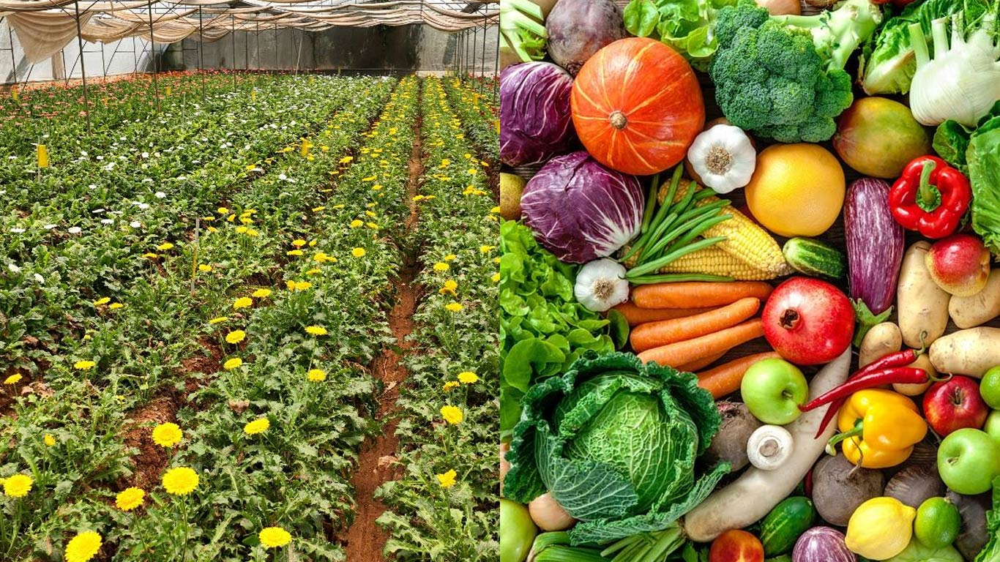

求人応募
日本の「特定技能」制度を通じて、
世界有数の最先端な職場環境で
キャリアの次なるステップを踏み出しませんか。
私たちは、意欲ある皆様が
日本の主要産業で安定した雇用を確保し、
成功に満ちた未来を築くための
信頼できるゲートウェイを提供します。
製造業
生産目標を達成するため、
スピード感のある環境で
機械の操作、製品の組み立て、
および品質検査を行います。
主な業務には、装置のメンテナンス、
安全プロトコルの遵守、
作業記録の作成が含まれます。
主な職種は、組立作業員、技術者、
マシンオペレーターなどです。
これらのポジションでは、技術的スキル、
細部への注意、そして重量物の持ち上げや
立ち仕事に耐えうる体力が必要です。
主な職務内容
生産オペレーション
産業用機械や コンベアラインの操作、 監視、および調整業務。
組立・加工
仕様書に従い、 生産ラインでコンポーネント、 部品、または製品の 組み立て作業を行います。
品質管理
原材料や完成品に 欠陥がないか、また 規格に適合しているかの 検査業務を行います。
チーム連携
日々の生産ノルマの達成や 課題解決に向けて、チームメンバーや 上司と協力して業務を行います。
介護
介護施設や老人ホームにおいて、
高齢者や障がいを持つ方々への
日常生活の支援と介助サービスを提供します。
主な業務には、食事・入浴・排泄・
着替えの介助、移動のサポート、
および清潔で安全な居住環境の維持が含まれます。
また、レクリエーション活動の支援や
入居者の状態観察を行い、必要に応じて
上司や看護師への報告も行います。
利用者様が尊厳と快適さを保ち、
質の高い生活（QOL）を送れるよう
支援することがこの仕事の目標です。
主な職務内容
アセスメントとケア
身体的検査の実施、 バイタルサイン（脈拍、体温、血圧）の測定、 および状態観察を行い、 必要なケアを評価します。
ケアプランの作成
個々の利用者様に合わせた ケアプランの策定、実施、および 状況に応じた更新業務を行います。
連携とコミュニケーション
医師や多職種チームと連携し、 患者様の状態変化の報告や、 疾病予防・治療について患者様や ご家族への説明・指導を行います。

農業
農作物の栽培や家畜管理を包括的に担当し、
種まき、収穫、選別、農産物の出荷、
または動物の飼育管理などを行います。
温室、農場、苗圃（びょうほ）などで勤務し、
農業機械の操作や農産物の品質管理を
確実に行う役割を担います。
主な職務内容
栽培管理
種まきや苗植え、灌水（水やり）、 施肥（肥料やり）、および 作物の生育管理を行います。
収穫および収穫後処理
農産物（レタス、キャベツ、 トマトなど）の収穫、選別、 洗浄、箱詰め、および 出荷作業を行います。
農業機械の操作
トラクター、噴霧器、 ビニールハウスのシステムなどの 農業機械の使用、および 保守点検業務を行います。
家畜管理
（畜産の場合）豚、牛、鶏などの エサやり、飼育、および 健康・衛生管理業務を行います。
造船所
溶接、取付け、塗装、および
機械や電気系統の設置を通じて、
船舶の建造、組立、修理を行います。
「特定技能」制度のもと、
上司の指示に従い、設計図を読み、
工具を使用して鋼材の配置や
調整などの業務を担当します。
主な職務内容
溶接・製缶
構造物の溶接、鋼板の接合、 および船舶用コンポーネントの 組み立てを専門に行います。
鋼材加工・ぎ装
設計図や図面を読み、 船体構造用の鋼材の切断、 曲げ加工、および 配置・調整作業を行います。
機械・電気機器の据付
配管の設置、エンジンの据付、 および電気・電子機器の 取り付け業務を行います。
検査・監督
船舶の組立工程の監督、 海上試運転の実施、および 品質基準の遵守を確認します。
建設業
住宅、商業施設、または
公共インフラの建設、改築、および
保守業務の実施、監督、補助を行います。
主な業務には、重機（クレーン、油圧ショベル）の操作、
大工仕事、左官、塗装、足場組立、および
現場準備が含まれます。
また、厳格な安全プロトコルの遵守、
チーム連携、そして毎日の現場清掃に
重点を置いて業務に取り組みます。
主な職務内容
主な職種
一般的な建設作業員、大工、 鉄筋工、とび職（足場工）、および 重機オペレーターなどが 主な役割として挙げられます。
必要なスキル
設計図の読み取り、構造物の組立、 コンクリート打設、配管や 電気系統の設置、および 工具のメンテナンスなどが含まれます。
職場環境と文化
安全の徹底（保護具の着用義務）、 ラジオ体操による始業、および 厳格な上下関係やチームワークを 重視する文化が特徴です。
応募要件
体力と筋力、さまざまな天候下での 屋外作業に適応できる能力、および 基本的な日本語でのコミュニケーション 能力が一般的に求められます。